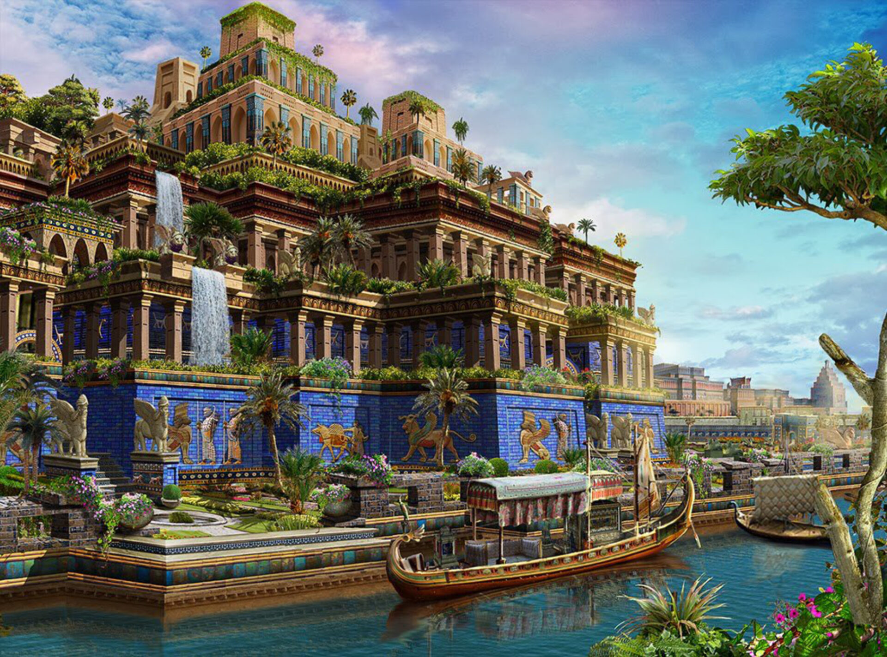

Acerca de Los Jardines Colgantes de Babilonia
Los Jardines Colgantes eran un lugar mágico lleno de plantas y flores que crecían en terrazas altas, como un bosque en el cielo. Se dice que estaban en la antigua Babilonia, y algunas personas creen que fueron construidos para hacer feliz a una reina que extrañaba las montañas. Las flores y los árboles daban sombra y refrescaban el aire. Aunque no sabemos si realmente existieron, la idea de un jardín tan hermoso inspira a cuidar nuestras plantas y la naturaleza.
Actividades
- Mini jardín colgante: Ayuda a los niños a plantar flores en botellas recicladas que puedan colgar en casa.
- Poema sobre plantas: Invita a los niños a inventar un poema corto sobre sus plantas favoritas.